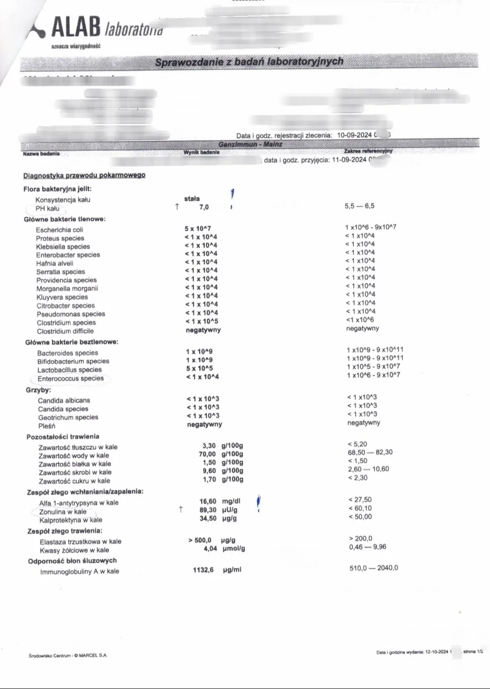
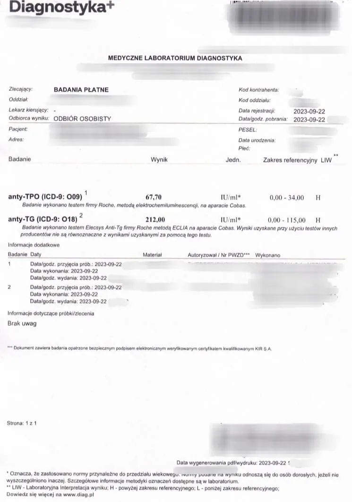
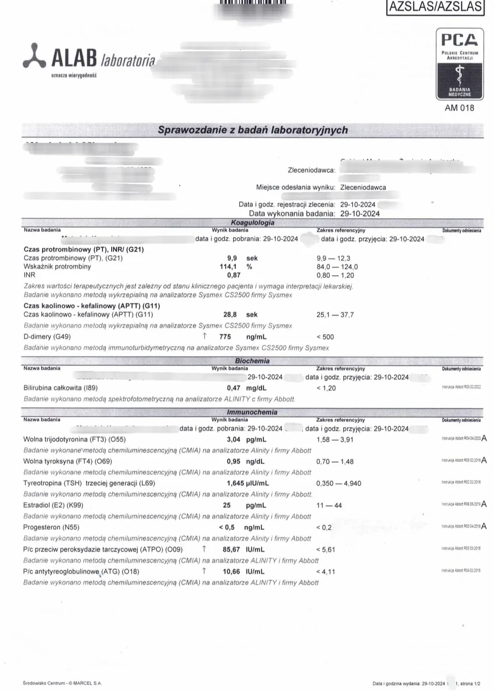
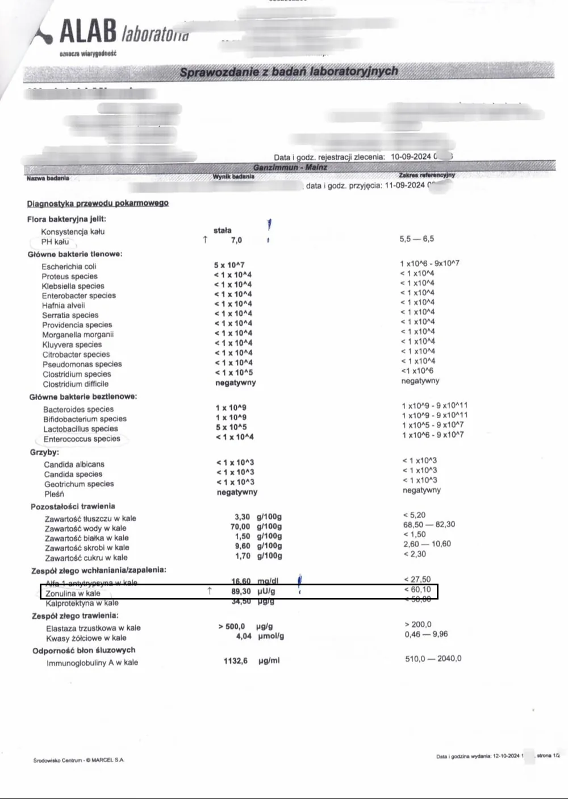
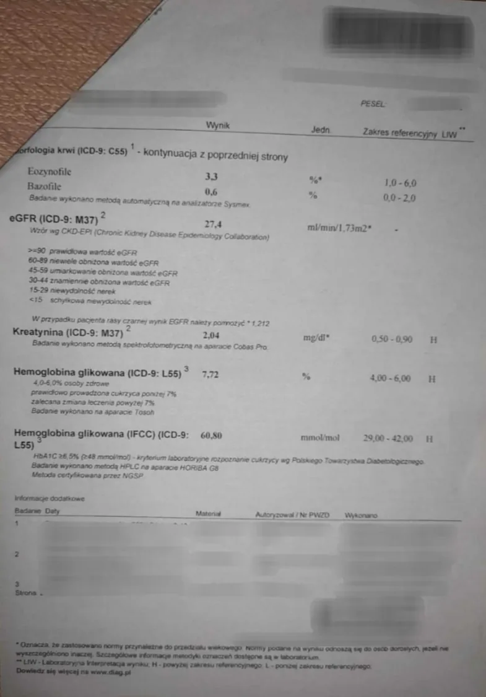
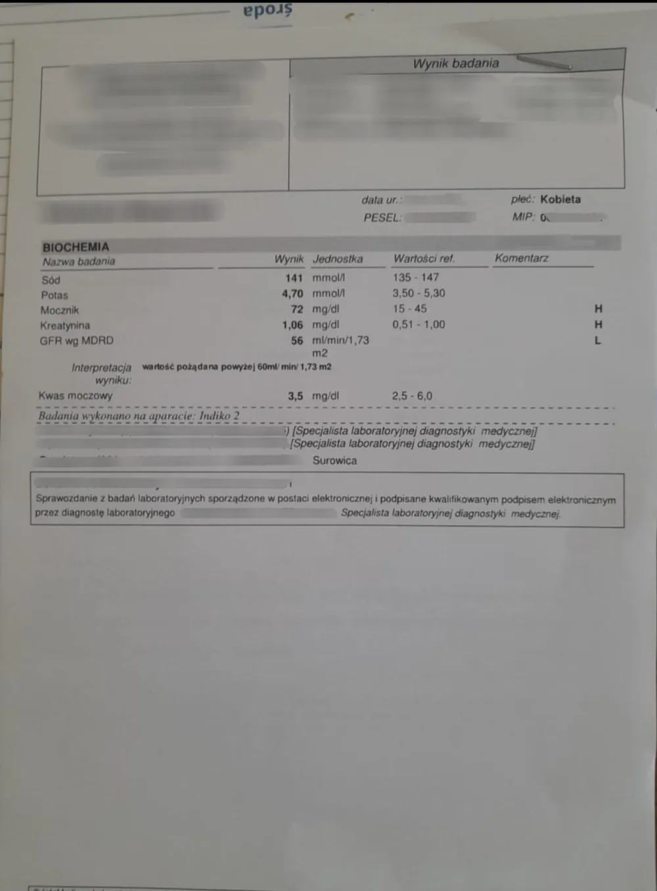

Strona główna / Rezultaty
RezultatyPrzykładowe wyniki
w badaniach krwi
Przykładowe przypadki zmian parametrów krwi u podopiecznych. Każdy z nich to efekt konsekwentnej, długofalowej pracy — konsultacji oraz zmian w żywieniu i stylu życia prowadzonych przez dłuższy czas. To pokazuje, że przy zaangażowaniu organizm potrafi wiele. Zdjęcia badań publikowane za zgodą podopiecznych.
Podopieczny zgłosił się z Hashimoto i niedoczynnością tarczycy, podwyższonymi przeciwciałami tarczycowymi, podwyższonymi D-dimerami oraz cechami zwiększonej przepuszczalności jelitowej (zonulina/kalprotektyna) i towarzyszącymi stanami zapalnymi. W trakcie długofalowej konsultacji i stosowania indywidualnie dobranych ziół, żywienia przeciwzapalnego oraz suplementacji celowanej, kolejne kontrolne badania wykazały stopniową poprawę wszystkich czterech parametrów.





Zonulina i kalprotektyna to różne markery badane w różnych laboratoriach, ale obie służą do oceny przepuszczalności jelit i stanu zapalnego przewodu pokarmowego — dlatego traktujemy je tu jako parametry porównywalne w ocenie tego samego problemu.
Podopieczny zgłosił się z podwyższoną bilirubiną i obciążoną wątrobą. W trakcie konsultacji i stosowania indywidualnie dobranych ziół, żywienia wspierającego wątrobę oraz suplementacji celowanej, kontrolne badanie po około półtora miesiąca wykazało powrót parametru do normy.


Podopieczna miała nieprawidłowe wartości kreatyniny oraz wskaźnika filtracji kłębuszkowej (GFR). W okresie dwóch miesięcy konsultacji i naturalnego wsparcia stylu życia kontrolne badanie krwi pokazało wyraźnie lepsze wartości obu parametrów.


Prezentowane przypadki są indywidualne i mają charakter poglądowy. Nie stanowią porady medycznej, diagnozy ani obietnicy lub gwarancji podobnych rezultatów — pokazują, że przy zaangażowaniu i konsekwentnej pracy nad stylem życia organizm potrafi wiele. Reakcja każdego organizmu zależy od wielu czynników.